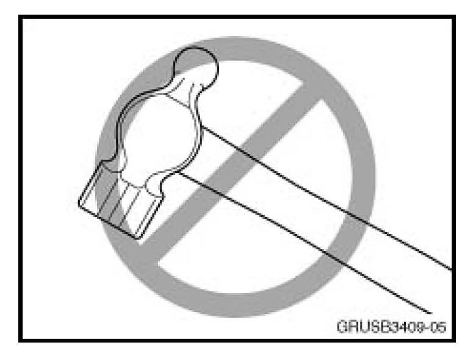
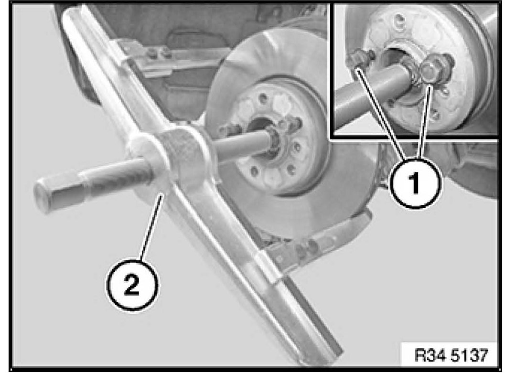

Brakes - Brake Rotor Removal Procedures/Precautions
SI B 34 04 09Brakes
October 2009
Technical Service
SUBJECT
Repair Procedures - Brake Disc/Rotor Removal
MODEL
All
INFORMATION
Due to exposure to various environmental conditions, corrosion can form at the wheel's center hub, making it difficult to remove the brake disc during service work. In order to avoid damage to other system components, the instructions in the Repair Manual must be adhered to when removing the brake discs.

Do not remove the brake disc by striking the friction area with a hammer or other tool. Excess force applied to the brake disc can result in damage to the drive flange, wheel bearing, carrier, and/or CV joint.

To aid in the removal of the brake disc, a suitable puller (2) can be used. When using a puller (2) to remove the disc, two wheel lugs (1) should be used to support the disc when it is separated from the drive flange.
WARRANTY INFORMATION
For information only